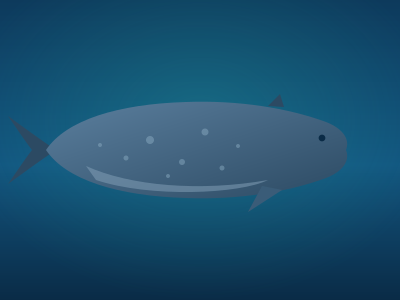
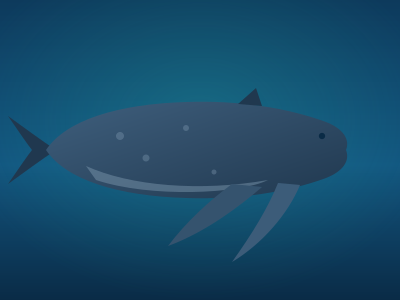
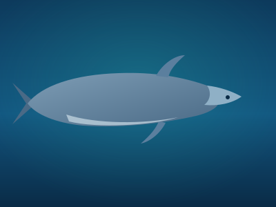
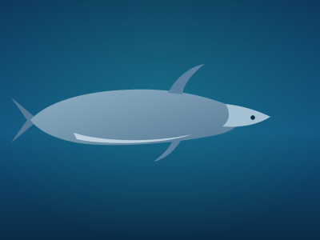

Blue Whale
Balaenoptera musculus
The largest animal ever to have lived, protected across every ocean basin.
View species →We listen to the ocean, identify the animals making the sound, forecast where they will be, and warn the vessels that put them at risk — before a collision happens.
A trained classifier reads log-mel spectrograms of underwater recordings and identifies the calling species in the browser — in seconds, with no uploads to a server.
Open AI ConservationAn interactive GIS explorer plots real sighting records from OBIS, filtered by species, region and time so researchers can interrogate distribution directly.
Open GIS ExplorerDetection histories feed forecasting and risk models that estimate where animals and shipping traffic are likely to meet — and how much slowing down would help.
See the researchA working directory of the whale and dolphin species covered by the platform, with their habitat, distribution and conservation status.

Balaenoptera musculus
The largest animal ever to have lived, protected across every ocean basin.
View species →
Megaptera novaeangliae
A migrating baleen whale whose songs travel thousands of kilometres underwater.
View species →
Tursiops truncatus
An intelligent coastal dolphin that regularly approaches vessels and shorelines.
View species →
Stenella longirostris
A highly social pelagic dolphin tracked across tropical ocean basins.
View species →Conservation only works if it is measurable. The platform supports four standing initiatives that turn monitoring into protection.
Risk is computed per cell as the probability of whale presence multiplied by ship exposure and the lethality of the prevailing speed.
Detection density is combined with fishing intensity and noise proxies to flag coastal cells where entanglement risk is highest.
Suitability modelling identifies habitat that species rely on but that current protected-area networks leave exposed.